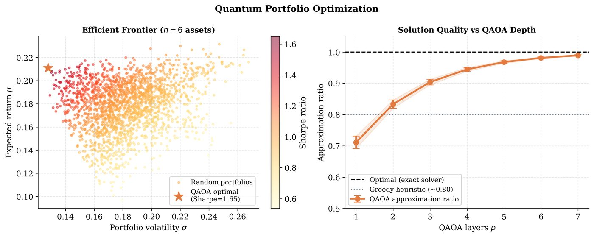

Chapter 20: QML in Finance and Optimization¶
Finance offers compelling QML application domains: portfolio optimization (combinatorial, NP-hard), derivative pricing (Monte Carlo acceleration), risk assessment (credit scoring, fraud detection), and market simulation. Quantum algorithms — QAOA for combinatorial problems, quantum Monte Carlo, and quantum amplitude estimation — promise quadratic speedups in sampling and portfolio optimization. This chapter covers the theory and implementation of quantum finance algorithms.
Learning Objectives
By the end of this chapter, you will be able to:
-
Formulate portfolio optimization as a QUBO and solve with QAOA
-
Apply quantum amplitude estimation for option pricing speedup
-
Implement quantum Monte Carlo for risk assessment
-
Train quantum classifiers for credit scoring and fraud detection
-
Evaluate the practical quantum advantage window for financial applications
20.1 Portfolio Optimization as QUBO¶
20.1.1 Markowitz Portfolio Optimization¶
The classical Markowitz model (Markowitz 1952) minimizes portfolio risk subject to return constraints:
For binary selection (\(w_i\in\{0,1\}\), select \(k\) of \(N\) assets):
where \(q\) is risk aversion, \(\lambda\) is a penalty for violating the cardinality constraint. This is a Quadratic Unconstrained Binary Optimization (QUBO).
20.1.2 QUBO to Ising Mapping¶
Map \(x_i\in\{0,1\}\) to \(s_i\in\{-1,+1\}\) via \(x_i = (1-s_i)/2\). The QUBO becomes an Ising problem:
QAOA minimizes this Hamiltonian on a quantum computer.
20.2 QAOA for Portfolio Optimization¶
Algorithm: QAOA Portfolio Optimizer
Inputs: Returns \(\boldsymbol{\mu}\), covariance \(\Sigma\), risk aversion \(q\), target assets \(k\), circuit depth \(p\).
Steps:
-
Encode portfolio as Ising Hamiltonian \(H_C\).
-
Initialize \(|\psi_0\rangle = H^{\otimes N}|0\rangle^N\) (uniform superposition).
-
Apply \(p\) alternating layers: \(U_B(\beta) = e^{-i\beta B}\) where \(B = \sum_i X_i\) (mixer), \(U_C(\gamma) = e^{-i\gamma H_C}\) (cost).
-
Measure and compute portfolio expectation value.
-
Optimize \(\{\gamma_l, \beta_l\}\) classically.
-
Sample best portfolio from converged state.
Solved Example 20.1
Problem: Set up the QUBO matrix for a 3-asset portfolio selection problem with returns \(\boldsymbol{\mu} = [0.1, 0.2, 0.15]\), variance \(\boldsymbol{\sigma}^2 = [0.05, 0.08, 0.06]\) (uncorrelated, \(\Sigma = \text{diag}(\sigma^2)\)), risk aversion \(q=0.5\), and \(k=2\) assets to select.
Solution: Penalty for \(\sum x_i = 2\): \(\lambda(\sum x_i - 2)^2\).
QUBO objective: \(f(x) = 0.5(0.05x_1^2 + 0.08x_2^2 + 0.06x_3^2) - 0.1x_1 - 0.2x_2 - 0.15x_3 + \lambda(x_1+x_2+x_3-2)^2\)
Since \(x_i^2 = x_i\) (binary), the diagonal terms are \((q\sigma_i^2 + \lambda - \mu_i)\) and off-diagonal terms are \(2\lambda\) (from cross terms of \((x_i+x_j)^2\)).
With \(\lambda=1\): \(Q_{ii} = 0.5\sigma_i^2 + 1 - \mu_i\): \(Q_{11}=0.925\), \(Q_{22}=0.84\), \(Q_{33}=0.88\). \(Q_{ij} = 2\lambda = 2\) for all \(i\neq j\).
The QUBO matrix is \(Q = \begin{pmatrix}0.925&2&2\\2&0.84&2\\2&2&0.88\end{pmatrix}\).
20.3 Quantum Monte Carlo for Option Pricing¶
Classical Monte Carlo (MC) for pricing a European call option:
Convergence: \(O(1/\sqrt{M})\) error after \(M\) samples.
20.3.1 Quantum Amplitude Estimation¶
Quantum Amplitude Estimation (QAE) (Brassard et al. 2002) estimates \(a = \sin^2\theta\) from the output of a quantum operator \(\mathcal{A}\):
with error \(O(1/M)\) using \(M\) queries (quadratic speedup over classical MC which needs \(O(1/M^2)\) samples for \(O(1/M)\) error).
Option pricing via QAE:
-
Load asset price distribution \(P(S)\) into quantum state using QRAM
-
Compute payoff \(\max(S-K,0)\) as quantum arithmetic
-
Apply amplitude estimation to extract \(\mathbb{E}[\text{payoff}]\)
Quantum speedup: \(O(1/\epsilon)\) vs. \(O(1/\epsilon^2)\) classically.
20.4 Quantum Classifiers for Financial ML¶

Financial classification tasks (credit scoring, fraud detection, bankruptcy prediction) naturally use:
-
QSVMs: Quantum kernel advantage for structured financial data
-
QNNs: Hybrid classifiers with quantum feature extraction
-
Quantum transfer learning: Pre-trained quantum features for small financial datasets
20.5 Implementation: QAOA Portfolio and Quantum Finance¶
import pennylane as qml
import numpy as np
from scipy.optimize import minimize
# -- Portfolio data --------------------------------------------
n_assets = 4
np.random.seed(42)
# Simulated returns and covariance
mu = np.array([0.10, 0.18, 0.14, 0.08]) # expected returns
sigma = np.array([ # covariance matrix
[0.05, 0.01, 0.02, 0.01],
[0.01, 0.08, 0.03, 0.02],
[0.02, 0.03, 0.06, 0.01],
[0.01, 0.02, 0.01, 0.04]
])
q_risk = 0.5 # risk aversion
k = 2 # number of assets to select
lam = 3.0 # penalty strength
# -- Build Ising Hamiltonian ----------------------------------
def portfolio_ising(mu, sigma, q, k, lam):
"""
Returns (h, J) for the Ising problem:
H = sum_i h_i*Z_i + sum_ij J_ij*Z_i*Z_j
"""
n = len(mu)
# QUBO: Q_ij
Q = np.zeros((n, n))
for i in range(n):
Q[i, i] = q * sigma[i, i] + lam - mu[i] - 2*lam*k
for i in range(n):
for j in range(i+1, n):
Q[i, j] = q * sigma[i, j] + 2*lam
Q[j, i] = Q[i, j]
# Convert QUBO x_i in {0,1} to Ising s_i in {-1,+1}: x_i=(1-s_i)/2
# H_Ising = (1/4) sum_ij Q_ij s_i s_j + offset
h = np.zeros(n)
J = np.zeros((n, n))
for i in range(n):
h[i] = -0.5 * (Q[i, i] + sum(Q[i, j] for j in range(n) if j != i))
for i in range(n):
for j in range(i+1, n):
J[i, j] = 0.25 * Q[i, j]
return h, J
h, J = portfolio_ising(mu, sigma, q_risk, k, lam)
# -- QAOA circuit ----------------------------------------------
dev = qml.device("default.qubit", wires=n_assets)
p_layers = 2 # QAOA depth
def cost_unitary(gamma, h, J, wires):
"""Apply cost Hamiltonian unitary exp(-i*gamma*H_C)."""
for i in wires:
qml.RZ(2 * gamma * h[i], wires=i)
for i in range(len(wires)):
for j in range(i+1, len(wires)):
if abs(J[i, j]) > 1e-10:
qml.CNOT(wires=[wires[i], wires[j]])
qml.RZ(2 * gamma * J[i, j], wires=wires[j])
qml.CNOT(wires=[wires[i], wires[j]])
def mixer_unitary(beta, wires):
"""Apply mixer Hamiltonian unitary exp(-i*beta*sum_X)."""
for w in wires:
qml.RX(2 * beta, wires=w)
@qml.qnode(dev, diff_method="parameter-shift")
def qaoa_circuit(params, h, J):
"""p-layer QAOA circuit for portfolio optimization."""
gammas = params[:p_layers]
betas = params[p_layers:]
wires = list(range(n_assets))
# Uniform superposition
for w in wires:
qml.Hadamard(wires=w)
# Alternating layers
for l in range(p_layers):
cost_unitary(gammas[l], h, J, wires)
mixer_unitary(betas[l], wires)
# Measure cost Hamiltonian expectation
cost_terms = []
for i in wires:
if abs(h[i]) > 1e-10:
cost_terms.append(h[i] * qml.PauliZ(i))
for i in range(len(wires)):
for j in range(i+1, len(wires)):
if abs(J[i, j]) > 1e-10:
cost_terms.append(
J[i, j] * (qml.PauliZ(i) @ qml.PauliZ(j))
)
H_obs = qml.Hamiltonian(
[t.coeffs[0] if hasattr(t, 'coeffs') else 1.0 for t in cost_terms],
[t.ops[0] if hasattr(t, 'ops') else t for t in cost_terms]
)
return qml.expval(H_obs)
# -- Optimize QAOA parameters ---------------------------------
def objective(params):
return qaoa_circuit(params, h, J)
np.random.seed(1)
init_params = np.random.uniform(0, np.pi, 2 * p_layers)
result = minimize(objective, init_params, method='COBYLA',
options={'maxiter': 500, 'rhobeg': 0.5})
print(f"Optimized QAOA cost: {result.fun:.4f}")
print(f"Parameters: {result.x}")
# -- Sample from optimized circuit to find best portfolio -----
@qml.qnode(dev)
def sample_portfolio(params):
gammas = params[:p_layers]
betas = params[p_layers:]
wires = list(range(n_assets))
for w in wires:
qml.Hadamard(wires=w)
for l in range(p_layers):
cost_unitary(gammas[l], h, J, wires)
mixer_unitary(betas[l], wires)
return qml.sample(wires=wires)
samples = sample_portfolio(result.x).reshape(-1, n_assets)
# Find most frequent bitstring = best portfolio
from collections import Counter
portfolio_counts = Counter(map(tuple, samples.tolist()[:100]))
best_portfolio = max(portfolio_counts, key=portfolio_counts.get)
selected = [i for i, x in enumerate(best_portfolio) if x == 1]
print(f"\nBest portfolio (QAOA): assets {selected}")
print(f"Expected return: {sum(mu[i] for i in selected):.4f}")
print(f"Portfolio risk: {np.array([sigma[i,j] for i in selected for j in selected]).sum():.4f}")
20.6 Chapter Summary¶
Chapter Summary
-
Portfolio optimization: Markowitz binary selection is a QUBO, solvable by QAOA or quantum annealers. Quadratic speedup over brute-force for combinatorial selection.
-
Quantum Monte Carlo: QAE gives \(O(1/\epsilon)\) complexity for option pricing vs. \(O(1/\epsilon^2)\) classical. Requires fault-tolerant QC.
-
Quantum classifiers: QSVM and QNN for credit scoring and fraud detection using quantum kernels on financial time series.
-
Quantum advantage: Amplitude estimation (fault-tolerant), QAOA (near-term heuristic), quantum ML on structured financial data.
-
Practical note: Near-term quantum advantage in finance requires circuit depths beyond NISQ; classical heuristics (genetic algorithms, simulated annealing) remain competitive for current qubit counts.
Exercises
Exercise . Formulate the binary knapsack problem (maximize value subject to weight constraint) as a QUBO. How does it differ from the portfolio optimization QUBO?
Exercise . Show that quantum amplitude estimation achieves a quadratic speedup over classical Monte Carlo: derive the \(O(1/M)\) error bound for QAE using \(M\) oracle calls, compared to \(O(1/\sqrt{M})\) for classical MC.
Exercise . Implement QAOA for portfolio optimization with 5 assets using real historical return data (obtain it from Yahoo Finance). Compare QAOA solution quality (expected return, risk) with the brute-force optimal solution.
Further Reading
-
Markowitz (1952) (Markowitz 1952) — modern portfolio theory
-
Brassard et al. (2002) (Brassard et al. 2002) — quantum amplitude estimation
-
Egger et al. (2020) — quantum computing for finance: state of the art
-
Woerner & Egger (2019) — quantum risk analysis using amplitude estimation
-
Orús et al. (2019) — quantum computing for finance survey